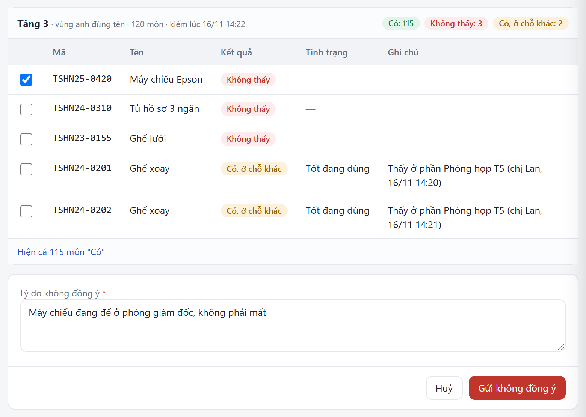
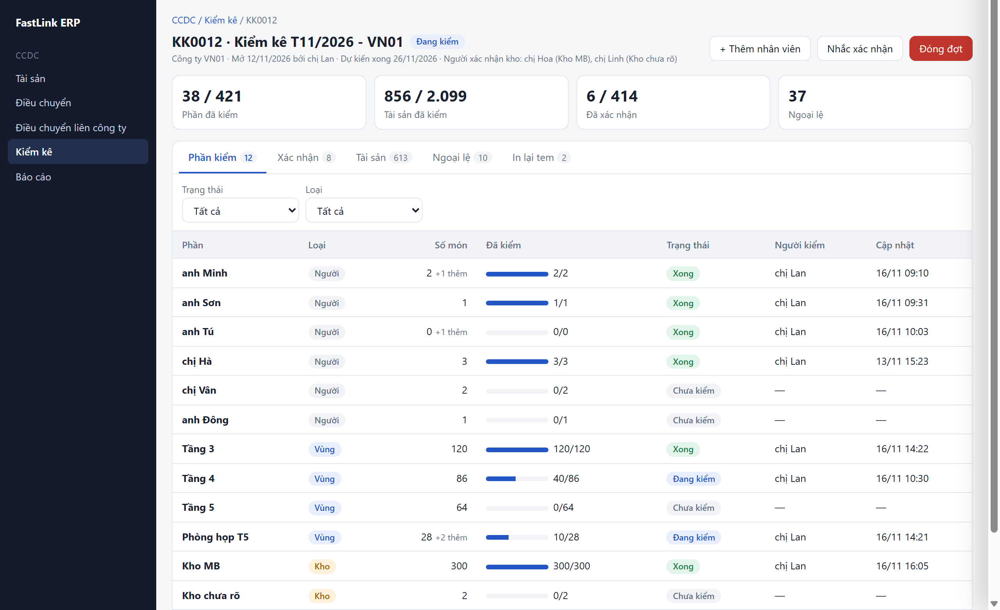

CCDC · Quản lý tài sản · Kiểm kê V5
Mô hình kiểm kê mới: kiểm theo nơi đặt, xác nhận theo người giữ
01Tóm tắt
Đề xuất: tách kiểm kê thành hai việc mà V4 đang gộp làm một.
- Kiểm là việc của hành chính, đi theo nơi đặt: từng người, từng phòng/tầng, từng kho. Mỗi tài sản thuộc đúng một phần kiểm.
- Xác nhận là việc của người giữ: mỗi người xác nhận một lần cho mọi món mình đứng tên, dù món đó được kiểm ở phần nào. Đồ trong kho do người được giao cho kho xác nhận.
Cách này giữ được thói quen hiện tại của hành chính: 66% số dòng kiểm kê trên V4 là đi theo vùng. Nó sửa ba lỗi gốc của V4: một món nằm trong hai danh sách, kiểm theo vùng không ghi ai giữ, và không ai xác nhận kết quả. Web trả lời được hai câu hỏi chính: ai/chỗ nào chưa được kiểm, và ai chưa xác nhận.
02Bài toán cần giải
Sau mỗi đợt kiểm kê, công ty cần trả lời được:
- Nhân viên nào chưa được kiểm, kể cả nhân viên mới chưa có tài sản trên hệ.
- Tài sản nào chưa được kiểm, và tài sản nào kiểm rồi nhưng không thấy, hỏng hoặc sai chỗ.
- Ai chịu trách nhiệm cho từng món: người giữ đã đồng ý với kết quả chưa.
Ràng buộc đã chốt: kiểm kê chỉ ghi nhận và báo cáo. Kiểm kê không sinh phiếu điều chuyển và không sửa người giữ, vị trí hay tình trạng trên bảng tài sản (chốt 16/11/2026 với anh Đạt).
03V4 đang làm gì và sai ở đâu
Mobile V4 cho chọn kiểm theo nhân viên hoặc kiểm theo vùng. Vùng là nơi đặt tài sản: kho, tầng, phòng. Kho MB là vùng VN01_TANG_2_KHO_LUU_TRU, kho MN là vùng VN02_KHO_LUU_TRU_CCDC.
Số đo trên dữ liệu online, 15/11/2026.
| Lỗi | Chuyện gì xảy ra | Chỗ trong code V4 |
|---|---|---|
| Một món nằm trong hai danh sách | Danh sách vùng lấy mọi tài sản mang mã vùng, không cần biết ai giữ. Phiếu Kho → Người lại giữ nguyên mã kho cũ. Một chiếc laptop đã giao cho nhân viên vẫn hiện trong danh sách kho: đi kiểm kho ghi "Không thấy", ở người thì ghi "Có". Không có cảnh báo nào. | AsAdminCheckBL.cs:186, AsItemChangeFlowBL.cs:763-767 |
| Kiểm theo vùng không ghi ai giữ | Mỗi dòng kiểm theo vùng bị xoá trắng người giữ. Không biết món "không thấy" ở tầng 3 là trách nhiệm của ai. | AsAdminCheckExtension.cs:31-35 |
| Không ai xác nhận | Người kiểm bấm lưu là xong. Người giữ không biết mình bị ghi gì, kho không có ai chịu trách nhiệm. | AsAdminCheckBL.cs:559 |
| Danh sách người chỉ lấy theo người đang giữ | Nhân viên mới đã cầm đồ nhưng trên hệ chưa gán thì không có trong danh sách, nên không ai đến kiểm. | AsAdminCheckBL.cs:300 |
| Mỗi lần lưu xoá rồi ghi lại cả phiên | Hai máy cùng kiểm một phiên thì lần lưu sau xoá lần trước. Bấm "tạo mới" thì sinh thêm một bản của cùng một lần kiểm. | AsAdminCheckBL.cs:386-403 |
Chỉ lấy mã bắt đầu bằng TSHN | TSHN chỉ là tiền tố mã tài sản hành chính. Món có mã khác (nhập tay, mã cũ) không bao giờ vào danh sách kiểm. Chưa đếm được có bao nhiêu món như vậy. | AsAdminCheckBL.cs:186 và :300 |
Đường dẫn tính từ flink-webapi/AssetManagement/. Code chỉ được đọc, không sửa.
04Ba cách đã cân nhắc
| Cách | Hành chính đi thế nào | Một món ở mấy phần | Ai xác nhận | Đánh giá |
|---|---|---|---|---|
| A. Giữ như V4 người hoặc vùng, độc lập | Theo người hoặc theo phòng | Có thể hai | Không ai | Loại Giữ nguyên cả ba lỗi gốc. |
| B. Chỉ theo người | Từng người. Đồ dùng chung nằm trong phần của người đứng tên | Một | Người giữ | Được, nhưng Bắt hành chính bỏ cách đi theo phòng, trong khi đó là 66% công việc hiện tại. |
| C. Kiểm theo nơi đặt, xác nhận theo người giữ | Theo người hoặc theo phòng/kho, như thói quen | Một | Người giữ (gom từ mọi phần) và người được giao cho kho | Đề xuất Sửa ba lỗi gốc mà không đổi cách đi kiểm. |
05Mô hình đề xuất
Hành chính đi theo nơi đặt
Lúc mở đợt, hệ chia mọi tài sản vào các phần kiểm: phần người, phần vùng, phần kho. Mỗi món đúng một phần. Hành chính chọn phần nào thì kiểm phần đó.
Người giữ chịu trách nhiệm
Khi mọi phần chứa đồ của một người đã kiểm xong, người đó nhận một yêu cầu xác nhận cho toàn bộ đồ mình đứng tên. Đồ trong kho do người được giao cho kho xác nhận.
Luật chia phần lúc mở đợt
Một đợt kiểm cho một công ty. Hệ chụp danh sách tại thời điểm mở đợt. Tài sản chuyển chỗ trong đợt vẫn tính theo bản chụp.
| Tài sản | Vào phần |
|---|---|
Đang ở kho (PositionCode = STORAGE) | Phần kho/vùng theo mã vùng của nó, ví dụ Kho MB |
| Có người giữ, có mã vùng không phải kho | Phần vùng đó, ví dụ Tầng 3 |
| Có người giữ, không có vùng, hoặc vẫn mang mã kho cũ | Phần người giữ. Nhãn kho chỉ có nghĩa khi đồ đang ở kho |
| Đang ở kho nhưng thiếu mã vùng (dữ liệu cũ) | Phần "Kho chưa rõ", để không món nào rơi khỏi danh sách |
Danh sách phần người = mọi nhân viên đang làm của công ty, kể cả người có 0 món trên hệ. Nhờ vậy nhân viên mới đã cầm đồ nhưng chưa được gán vẫn được kiểm. Người vào làm giữa đợt thì hành chính thêm vào đợt. Người đã nghỉ không có phần kiểm. Đồ còn ghi ở họ hiện thành nhóm riêng trong báo cáo để thu hồi.
Không lọc theo tiền tố mã. Chỉ bỏ các trạng thái không cần kiểm: Không theo dõi, Mất, Đã thanh lý.
Mục 06 kể luồng một đợt kiểm kê từ đầu tới cuối theo đúng các luật này.
06Luồng kiểm kê từ đầu đến cuối
Kể theo đúng thứ tự thao tác: trên web bấm gì, hệ làm gì, rồi tới mobile, tới người giữ, tới báo cáo. Tên người, mã và số liệu là giả định, chỉ để minh hoạ. Bấm thử đúng luồng này trên màn minh hoạ web.
Bối cảnh
| Ai / chỗ nào | Đồ đang ghi trên hệ |
|---|---|
| Anh Minh, nhân viên | 1 laptop, 1 màn hình |
| Anh Sơn, trưởng phòng | 1 laptop. Ngoài ra đứng tên 120 món bàn ghế, máy chiếu ở Tầng 3 |
| Anh Tú, nhân viên mới vào tuần trước | Không có gì. Thực tế đã cầm 1 laptop lấy từ kho nhưng chưa ai lập phiếu |
| Kho MB | 300 món, trong đó có chiếc laptop anh Tú đang cầm |
| Anh Nam, đã nghỉ việc | Hệ vẫn ghi đang giữ 1 điện thoại |
Người đi kiểm: chị Lan (hành chính). Người xác nhận Kho MB: chị Hoa (tổ hành chính MB).
Tạo đợt kiểm kê
Vào Kiểm kê, bấm Tạo đợt. Nhập tên đợt ("Kiểm kê T11/2026") và chọn công ty (VN01). Ngày bắt đầu, dự kiến xong, ghi chú không bắt buộc. Không phải nhập danh sách người hay tài sản: hệ tự lấy. Nếu VN01 đang có đợt chưa đóng thì hệ chặn ngay.
Bấm "Xem trước": hệ lấy danh sách của công ty đó
- Người: mọi nhân viên đang làm của VN01, lấy từ nhân sự, kể cả người mới chưa được gán tài sản nào như anh Tú. Người đã nghỉ không lấy.
- Tài sản: mọi tài sản của VN01, mỗi món xếp vào đúng một chỗ: đồ đang ở người (laptop, điện thoại) vào phần của người đó; đồ ở tầng, phòng họp vào phần vùng (Tầng 3, 120 món, đứng tên anh Sơn); đồ trong kho vào phần Kho MB.
- Màn hình hiện số liệu: 413 người (25 người không giữ món nào), 4 vùng, 1 kho, 2.091 món, kèm cảnh báo "1 điện thoại vẫn ghi ở anh Nam, người đã nghỉ".
- Chọn người xác nhận kho: hệ gợi ý chị Hoa (tổ hành chính MB, đã xác nhận ở đợt trước).

Bấm "Mở đợt": hệ chụp và khoá danh sách
Danh sách vừa xem được chụp lại và khoá. Từ giờ có ai lập phiếu điều chuyển thì danh sách kiểm vẫn giữ như lúc mở. Mobile bắt đầu thấy đợt này.
Hành chính đi kiểm từng phần
Mở app, chọn đợt, thấy danh sách các phần cần kiểm (tab Người, tab Vùng/Kho).
- Anh Minh: app hiện sẵn 2 món anh Minh đang giữ. Quét tem laptop thì tự đánh Có. Màn hình bị sọc thì chọn Hỏng và chụp ảnh. Trên bàn còn con chuột có tem: quét vào, app báo "món này đang ghi ở Kho MB", chị Lan thêm vào phần anh Minh. Hệ chỉ ghi nhận, không tự đổi người giữ.
- Anh Tú (người mới): danh sách trống. Anh Tú đưa ra chiếc laptop lấy từ kho, quét vào thì hệ báo nó đang ghi ở kho. Phát hiện được chiếc laptop chưa có phiếu giao.
- Tầng 3: đi hết tầng, quét như thói quen V4. 115 món Có, 3 món không thấy. 2 chiếc ghế quét được ở phòng họp tầng 5 thì ghi "Có, ở chỗ khác", không bị tính là mất.
- Kho MB: chuột và laptop đã được đánh dấu sẵn "đã thấy ở phần anh Minh, anh Tú", không cần đi tìm. Còn lại 297 Có, 1 Không thấy.
Mỗi phần kiểm xong bấm Xong phần. Mỗi lần quét được lưu ngay, mất mạng không mất kết quả.
Nhân viên vào xác nhận
Khi mọi phần có đồ của một người đã kiểm xong, hệ tự gửi yêu cầu cho người đó. Anh Minh nhận ngay sau khi phần của anh xong. Anh Sơn phải chờ cả phần của anh và phần Tầng 3 xong, rồi nhận một yêu cầu cho cả 121 món. Kho MB do chị Hoa xác nhận.
- Vào bằng đâu: thông báo trên app/web, hoặc menu Xác nhận kiểm kê (có chấm đỏ khi đang chờ mình). Đăng nhập bằng tài khoản của chính mình.
- Đầu màn: tên đợt, người kiểm, trạng thái của mình, và 4 con số: số món mình đứng tên, số Có, số Không thấy/Hỏng, số Có ở chỗ khác.
- Danh sách: chia nhóm theo phần ("Phần của tôi" và "Tầng 3"). Món có vấn đề (không thấy, hỏng, ở chỗ khác, thêm từ chỗ khác) xếp lên đầu, kèm ghi chú như "thấy ở phần Phòng họp T5". Món "Có" thu gọn, bấm "Hiện cả 115 món Có" để xem hết.
- Nút Đồng ý: hệ hỏi lại "Anh xác nhận kết quả của 121 món là đúng?". Đồng ý xong thì kết quả bị khoá, hành chính không mở lại được nữa.
- Nút Không đồng ý: hiện ô tích ở từng món (tích món chưa đúng, không bắt buộc) và ô lý do bắt buộc. Gửi xong thì phần chứa món đó trả về hành chính kiểm lại.
- Lịch sử: ghi lại mỗi lần đồng ý hoặc không đồng ý, kèm lý do và thời gian.
| Trạng thái nhân viên thấy | Nghĩa là |
|---|---|
| Chờ kiểm xong | Còn phần có đồ của mình chưa kiểm xong (màn ghi rõ phần nào). Chưa cần làm gì. |
| Chờ xác nhận | Đã kiểm xong hết, đến lượt mình bấm Đồng ý hoặc Không đồng ý. |
| Không đồng ý | Mình đã phản hồi, đang chờ hành chính kiểm lại. Kiểm lại xong thì quay về "Chờ xác nhận" (lần 2). |
| Đã xác nhận | Kết quả của mình đã khoá. |
Nếu nhân viên không đồng ý
Anh Sơn thấy máy chiếu bị ghi "Không thấy", bấm Không đồng ý, tích máy chiếu, ghi lý do "máy chiếu đang để ở phòng giám đốc".
- Phần Tầng 3 tự mở lại, trả về chị Lan.
- Chị Lan kiểm lại, thấy máy chiếu, ghi "Có, ở chỗ khác".
- Anh Sơn nhận yêu cầu lần 2, bấm Đồng ý.

Theo dõi suốt đợt
Vào chi tiết đợt, bốn con số trả lời ngay:
- Còn bao nhiêu phần chưa kiểm, phần nào (anh Đông, Tầng 5, Kho chưa rõ…).
- Còn ai chưa xác nhận: chị Hà chờ đã 3 ngày, bấm Nhắc.
- Ngoại lệ: món hỏng, không thấy, ở chỗ khác, ghi ở người đã nghỉ.
Nhân viên vào làm giữa đợt thì bấm Thêm nhân viên.

Đóng đợt
Bấm Đóng đợt. Hệ báo trước còn bao nhiêu phần chưa kiểm và bao nhiêu người chưa xác nhận. Đóng xong thì mọi thứ bị khoá. Danh sách ngoại lệ là việc hành chính tự xử lý sau: lập phiếu giao chiếc laptop cho anh Tú, thu hồi điện thoại của anh Nam, xử lý màn hình hỏng. Kiểm kê không tự sửa bảng tài sản.
Câu chốt: một đợt trả lời được ba câu: ai chưa được kiểm, món nào chưa được kiểm, và ai chịu trách nhiệm. Không sót người mới, không có món nằm hai nơi, không có kết quả bị ghi đè.
Khác V4 ở đâu, tóm lại
| Tình huống trong ví dụ | V4 | Cách mới |
|---|---|---|
| Anh Tú mới vào, trên hệ không giữ gì | Không có trong danh sách, không ai kiểm | Có phần riêng, laptop được phát hiện |
| Laptop của anh Tú vẫn ghi ở kho | Kho ghi "Không thấy", không ai biết nó ở đâu | Kho tự hiện "đã thấy ở phần anh Tú" |
| 2 ghế ở Tầng 5 | "Không thấy" ở Tầng 3 | "Có, sai chỗ", biết đang ở đâu |
| 120 món Tầng 3 | Kiểm theo vùng, không ghi ai giữ, không ai xác nhận | Kiểm theo vùng, anh Sơn xác nhận và có quyền phản đối |
| Hai người cùng kiểm một phần | Lần lưu sau xoá lần trước | Mỗi món lưu riêng, không mất |
| Biết đợt đã xong chưa | Phải tự dò nhiều bản ghi | Báo cáo 1 và 2 trả lời thẳng |
07Lợi ích
1Biết chính xác cái gì chưa kiểm
Danh sách được chụp lúc mở đợt và mỗi món thuộc đúng một phần. "Chưa kiểm" là một con số đếm được, không còn suy đoán từ nhiều bản ghi.
2Không còn kết quả mâu thuẫn
Một món không thể vừa "Có" ở người vừa "Không thấy" ở kho. Món thấy sai chỗ được ghi đúng là sai chỗ.
3Mọi món đều có người chịu trách nhiệm
Người giữ xác nhận đồ của mình, kể cả đồ được kiểm theo phòng. Kho có người xác nhận riêng. Có tranh chấp thì có lý do ghi lại.
4Giữ thói quen đi theo phòng
Hành chính vẫn chọn "theo vùng" như V4. Không phải đào tạo lại cách đi kiểm.
5Không sót người
Danh sách người lấy theo nhân viên đang làm, không theo người đang giữ đồ. Nhân viên mới và người tưởng không giữ gì đều được kiểm và phải xác nhận.
6Không còn ghi đè và nhiều bản
Mỗi phần chỉ có một bản trong một đợt. Mobile lưu từng món ngay khi quét, không gửi lại cả danh sách. Hai máy cùng kiểm một phần không xoá kết quả của nhau.
7An toàn cho dữ liệu tài sản
Kiểm kê không sửa bảng tài sản. Nhãn vùng cũ hay dữ liệu bẩn chỉ hiện thành ngoại lệ trong báo cáo, để hành chính tự lập phiếu nếu cần.
8Nhẹ và dễ báo cáo
Một đợt một công ty, tạo một lần lúc mở. Báo cáo chính chỉ có hai câu hỏi: chỗ nào chưa kiểm, ai chưa xác nhận.
08Thao tác trên mobile
Hành chính đi kiểm
- Chọn đợtChỉ hiện các đợt đang mở của công ty mình có quyền.
- Chọn phầnHai tab Người và Vùng/Kho, có ô tìm. Phần chưa kiểm xếp lên đầu, mỗi phần có số món và trạng thái.
- Quét temMón có trong danh sách được đánh dấu Có. Chọn tình trạng nếu khác: Tốt đang dùng, Tốt không dùng, Hỏng (bắt buộc chụp ảnh), Chờ thanh lý.
- Tem hỏng hoặc mấtTìm theo mã tay, chụp ảnh, hệ tự đánh dấu cần in lại tem.
- Quét được món không có trong danh sáchHệ báo món đó thuộc phần nào ("đang ghi ở anh Y" / "thuộc Kho MB" / "ghi ở người đã nghỉ"). Hành chính thêm vào phần đang kiểm. Hệ chỉ ghi nhận, không đổi người giữ, và lưu vết ở cả hai phần.
- Mã không có trên hệKhông thêm được. Quản lý phải tạo tài sản trước, sau đó mới thêm vào đợt.
- Bấm "Xong phần này"Món chưa đụng tới phải được đánh dấu trước, có nút "đánh dấu còn lại là Không thấy". Người có 0 món: bấm "Không giữ tài sản nào".
Đang ghi ở anh Y · đã lưu vếtThêm
Hình minh hoạ bố cục, không phải thiết kế giao diện.
Mobile lưu từng món ngay khi quét. Mất mạng giữa chừng thì món đã lưu vẫn còn. Phần đã xong được mở lại khi đợt còn mở, có ghi lại ai mở và lúc nào.
Người được kiểm xác nhận
- Nhận thông báoKhi mọi phần chứa đồ của mình đã kiểm xong. Ai cũng đăng nhập được, nên tự xác nhận bằng tài khoản của mình, trên app hoặc web.
- Xem danh sáchĐồ của mình chia nhóm theo phần (phần của tôi, Tầng 3…), kèm kết quả từng món.
- Đồng ý hoặc Không đồng ýKhông đồng ý thì bắt buộc ghi lý do. Phần liên quan trả về hành chính xem lại. Đồng ý thì kết quả của người đó bị khoá.
09Thao tác trên web
Mở đợt
- Chọn công ty, đặt tên và thời gian.
- Hệ hiện bản xem trước: số người, số vùng/kho, số món mỗi phần, số món ghi ở người đã nghỉ.
- Chọn người xác nhận cho từng kho. Hệ gợi ý từ tổ hành chính của miền và người của đợt trước.
- Bấm mở. Hệ chụp danh sách và tạo toàn bộ phần kiểm.
Trong đợt
- Theo dõi tiến độ bằng các báo cáo ở mục 10.
- Thêm nhân viên vào làm giữa đợt.
- Mở lại một phần đã xong, bắt buộc ghi lý do.
- Nhắc người chưa xác nhận: một người hoặc tất cả.
- Xem chi tiết một phần: từng món, ai kiểm, lúc nào, ảnh.
Đóng đợt
- Hệ báo trước số phần chưa kiểm và số người chưa xác nhận.
- Đóng xong thì mọi kết quả bị khoá. Phần chưa kiểm vẫn hiện là "chưa kiểm" trong báo cáo, không bị coi là đã xong.
- Ghi ngày kiểm cuối lên tài sản đã kiểm, chỉ để tham khảo.
Người giữ xác nhận trên web
Màn "Xác nhận kiểm kê": cùng nội dung như trên app, có nút Đồng ý / Không đồng ý. Mô tả chi tiết ở mục 06, bước 5.
Màn minh hoạ web
Bấm thử được: mở màn minh hoạ web. Dữ liệu giả, chưa nối API. Ở thanh vàng trên cùng đổi vai giữa Quản lý / hành chính và anh Sơn (nhân viên được kiểm). Kịch bản theo đúng luồng ở mục 06:
- Quản lý bấm đợt KK0012 để xem chi tiết, bấm một phần để xem từng món.
- Đổi vai anh Sơn: bấm Không đồng ý, tích Máy chiếu, ghi lý do.
- Đổi lại Quản lý: Tầng 3 thành "Mở lại". Bấm "Giả lập: chị Lan kiểm lại xong".
- Đổi vai anh Sơn: xác nhận lần hai, bấm Đồng ý, kết quả bị khoá.
- Quản lý: thử Thêm nhân viên, Nhắc xác nhận, Đóng đợt, tạo đợt mới.
10Báo cáo
| Báo cáo | Trả lời câu hỏi | Nội dung |
|---|---|---|
| 1. Tiến độ kiểmchính | Người nào, phòng nào, kho nào chưa được kiểm? | Mỗi phần một dòng: loại (người/vùng/kho), số món, đã kiểm bao nhiêu, trạng thái, người kiểm. Lọc theo chưa kiểm hoặc đang kiểm. |
| 2. Tiến độ xác nhậnchính | Ai đã được kiểm mà chưa xác nhận? Ai không đồng ý? | Mỗi người giữ một dòng: chờ kiểm xong (đang chờ phần nào), chờ xác nhận, đã xác nhận, không đồng ý kèm lý do. Có nút nhắc. Kho tính như một người. |
| 3. Theo tài sản | Tài sản nào chưa được kiểm, và kết quả của từng món? | Mỗi món một dòng: phần, kết quả (Có / Hỏng / Không thấy / Sai chỗ / Chưa kiểm), tình trạng mới, người giữ, đã xác nhận chưa. |
| 4. Ngoại lệ | Cần xử lý gì sau kiểm kê? | Món không thấy, hỏng, sai chỗ, thấy ở phần khác, và nhóm "ghi ở người đã nghỉ". Để hành chính tự lập phiếu nếu cần. |
| 5. In lại tem | Món nào cần dán tem mới? | Các món được đánh dấu tem hỏng hoặc mất trong lúc kiểm. |
Báo cáo 1 và 2 là hai báo cáo chính đã thống nhất với hành chính. Ba báo cáo kiểm kê cũ của V4 sẽ được thay bằng các báo cáo này. Hình chi tiết đợt ở mục 06, bước 7.
11Cái giá và rủi ro
| Điểm | Cách giảm |
|---|---|
| Thêm tầng xác nhận, tách khỏi phần kiểm. DB và API phức tạp hơn "chỉ theo người" | Chỉ thêm một bảng xác nhận theo (đợt, người). Phần kiểm vẫn là một khái niệm duy nhất cho người, vùng và kho. |
| Người giữ phải chờ mọi phần chứa đồ của mình xong mới xác nhận được | Báo cáo 2 ghi rõ đang chờ phần nào, để hành chính ưu tiên kiểm phần đó. |
| Một người đứng tên rất nhiều đồ dùng chung thì việc xác nhận dễ thành hình thức | Đây là việc quản lý: đồ chung nên đứng tên người thật sự chịu trách nhiệm. Cần hỏi hành chính đồ ở các tầng đang đứng tên ai. |
| Mã vùng trên dữ liệu có thể đã cũ, nên lúc đầu sẽ nhiều món "sai chỗ" | Đó là phát hiện đúng, không phải lỗi. Báo cáo 4 gom lại để hành chính sửa nhãn bằng phiếu. |
| API mobile khác hẳn v3.1: không còn chọn chế độ hay gõ mã vùng, có thêm phần và xác nhận | Báo bên app sớm, gửi hợp đồng API mới trước khi code. |
12Đã chốt và câu hỏi cho anh Đạt
Đã chốt
- Kiểm kê không sinh phiếu và không sửa bảng tài sản (16/11, anh Đạt).
- Hướng đi: kiểm theo nơi đặt, xác nhận theo người giữ (16/11, đã thống nhất trong nhóm; trình anh Đạt).
- Một đợt cho một công ty. Danh sách được chụp lúc mở đợt.
- Người giữ bắt buộc xác nhận, đợt nào cũng vậy, không có ô bật/tắt. Ai cũng đăng nhập được. Luồng "NV duyệt kiểm kê" của V4 bị huỷ vì quy trình cũ làm lộn xộn, không phải vì bỏ yêu cầu xác nhận.
- Không giao trước ai đi kiểm phần nào. Ai có quyền thì kiểm, hệ ghi lại ai đã kiểm.
- Tài sản không có người giữ thì ở kho. Có kho MB và kho MN.
- Chỉ nạp nhân viên đang làm. Duyệt hộ cho người nghỉ việc sẽ bổ sung sau.
- Thêm món của phần khác chỉ là ghi nhận, có cảnh báo hai chiều và lưu vết (anh Đạt).
- Mã không có trên hệ thì không thêm được.
TSHNlà tiền tố mã, không dùng để lọc.
Câu hỏi cần anh Đạt chốt
| # | Câu hỏi | Vì sao cần, kèm ví dụ | Đề xuất |
|---|---|---|---|
| 1 | Ai xác nhận Kho MB và Kho MN? Thủ kho, trưởng tổ hành chính, hay người khác? Mỗi đợt chọn lại hay cố định một người? | Người thì ai giữ đồ người đó xác nhận, còn kho không có ai giữ. Ví dụ: chị Lan kiểm Kho MB xong, có 297 món, 1 món không thấy. Phải có một người bấm "đúng, kho có những món này" và chịu trách nhiệm nếu sau này kho thiếu đồ. | Khi tạo đợt, chọn người xác nhận cho từng kho. Hệ gợi ý người trong tổ hành chính của miền (V5 đã có danh sách) và người của đợt trước. |
| 2 | Nhân viên công ty này cầm tài sản công ty kia thì ai kiểm? | Ví dụ: anh X là nhân viên VN01, nhưng chiếc laptop anh X cầm ghi là tài sản VN02. Đợt VN01 chỉ lấy tài sản VN01, nên không có chiếc laptop. Đợt VN02 có chiếc laptop, nhưng anh X không phải nhân viên VN02, nên không có phần của anh X. Chiếc laptop lọt giữa hai đợt. | Theo người: đợt VN01 lấy thêm đồ công ty khác mà nhân viên VN01 đang cầm, đánh dấu "tài sản của VN02". Đếm dữ liệu trước xem có bao nhiêu món như vậy. |
| 3 | Đồ dùng chung ở các tầng và phòng họp đang đứng tên ai? Người đó có chịu xác nhận cả danh sách không? | Trên V5 mỗi món phải ghi ở một người hoặc ở kho, nên bàn ghế, máy chiếu, điều hoà cũng đang ghi tên ai đó. Ví dụ: 120 món ở Tầng 3 đứng tên anh Sơn, thì anh Sơn phải xác nhận cả 120 món. Nếu cả trăm món của nhiều tầng cùng ghi tên một người hành chính, việc xác nhận dễ thành hình thức. | Đồ chung nên đứng tên người thật sự chịu trách nhiệm khu đó, ví dụ trưởng bộ phận của tầng. Đếm dữ liệu trước: mỗi vùng ai đứng tên, mỗi người bao nhiêu món. |
| 4 | Kho MB thuộc VN01, Kho MN thuộc VN02, đúng không? | Mã kho trong V4 gợi ý như vậy (VN01_TANG_2_KHO_LUU_TRU, VN02_KHO_LUU_TRU_CCDC). Nếu đúng thì "một đợt một công ty" tự cho ra mỗi đợt một kho. |
Xác nhận nhanh, không cần thảo luận. |
| 5 | Ba luật đang làm theo đề xuất trong màn minh hoạ, có đồng ý không? | (a) Người giữ không đồng ý thì tích các món chưa đúng (không bắt buộc). Chỉ phần chứa các món đó bị mở lại cho hành chính kiểm lại. (b) Đã có người xác nhận thì phần đó không mở lại được nữa. (c) Đóng đợt khi còn người chưa xác nhận thì người đó bị ghi "chưa xác nhận", không tự coi là đồng ý. | Giữ cả ba. |
Câu 2 và câu 3 nên kèm số liệu: tôi đếm được trên dữ liệu thật (chỉ đọc, cần nạp dump hoặc kết nối DB chỉ đọc).